Does a 1929 market chart predict a market crash?
No. No it does not. Not even a little bit.
But that isn’t stopping Mark Hulbert, writer for MarketWatch and a host of other Wallstreet rags, from using it to bring in pageviews that boosted his article about it to fourth most popular on the MarketWatch website.[1] And he’s not the only one.
Here’s the general idea: if you plot the Dow Jones Industrial Average (henceforth referred to as DJIA) over the last 18 months, and you do the same for the period leading up to the 1929 stock market crash, and you line them up in a certain way, then it looks like the plots sort of line up. See?
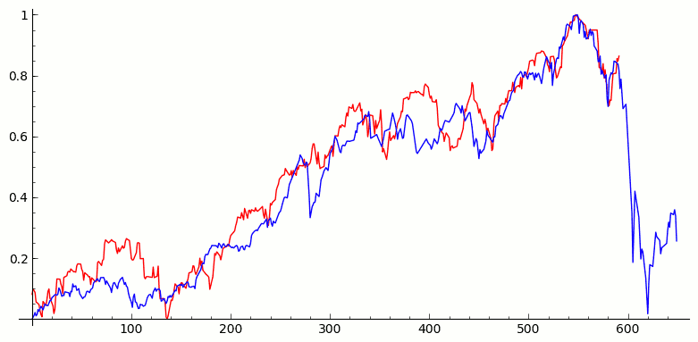
This graph, it is alleged, should make us afraid that the red curve representing the recent DJIA will follow the crash (visible on the right in this graph) of the blue curve representing the DJIA leading up to the infamous 1929 economic catastrophe. If you’re a typical person, a non datahead whose college science lab is a distant memory, then this graph might look pretty convincing. But is there anything in reality that suggests there is cause for concern?
No. Nothing. Like, not even a little tiny thing. Let’s see why.
Do the plots line up?
No. Here is the real plot of the real data for both periods:
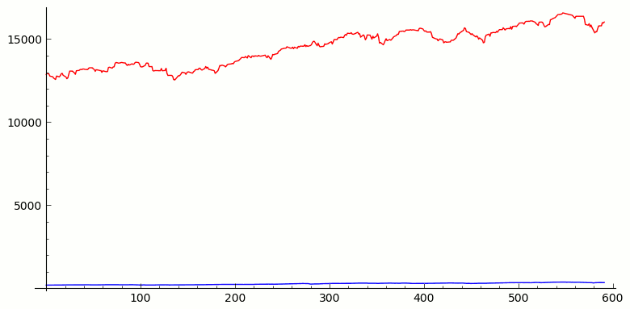
This is a little like comparing apples and oranges, so let’s “normalize” these curves by giving them the same minimum. That is, we divide all the DJIA values by the minimum DJIA value over the entire interval so that the graph is now a plot of the percentage of the minimum value of the DJIA over the given period. (We could have normalized by dividing by the first value, or the max value, but you get similar results.)
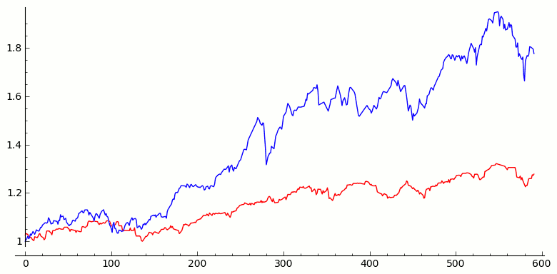
That’s still dramatically different from the chart given by the doom-saying market commentators. So how did they get their chart?
By monkeying with the scale of the y-axis, that’s how. I know of no mathematical reason to do so. In fact, the only reason I can think of that someone would want to do this is to make the plots line up. We must literally stretch out the red plot–and only the red plot–in the vertical direction to obtain the chart from the MarketWatch articles. This is “Manipulating Plots 101,” and every freshman lab science student is taught not to do this.
Do the manipulated plots line up?
Sort of, but not especially well. There are a few ways of measuring how well the manipulated plots match up. One method is to add up all the differences of the DJIA values. This is called the $\ell^1$-distance in mathematics and gives the area between the two curves. The smaller the area between the two curves, the closer the curves match up. (A more natural measurement for mathematicians is called the $\ell^2$-distance which adds up the squares of the distances between each value and then takes a square root at the end. It turns out that nothing of substance that follows would change if we use the $\ell^2$-distance.)
Let’s compare the recent period of DJIA activity highlighted by Hulbert to every other time period of the same length and see if there are periods that more closely match current activity than does the pre-1929 crash period. (Keep in mind that we are comparing plots that have gone through the same nonsensical scale manipulation that was applied to obtain the original Hulbert chart.)
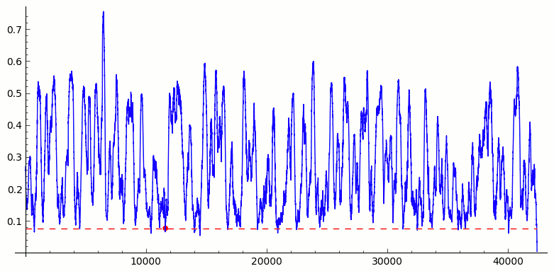
We expect that most time periods don’t match up well. However, it does look like the pre-crash curve is a pretty good match. Let’s zoom in to see what’s going on.
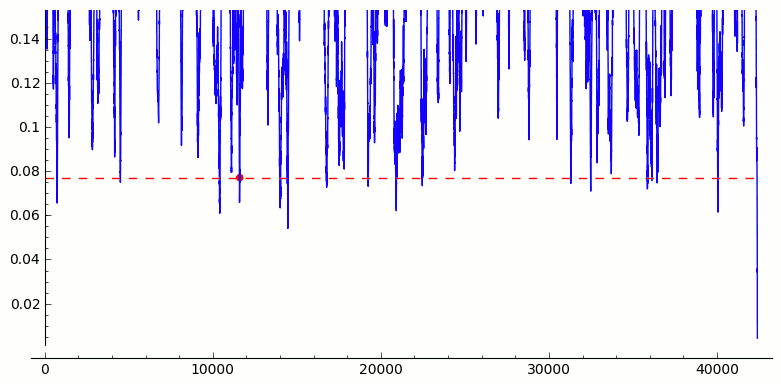
As you can see, it turns out there are many time periods that match recent DJIA activity better than the pre-1929 crash. Why aren’t we using those time periods to predict the near-future activity of the DJIA? Could it be because they are exceptionally boring?
But doesn’t a good match to the pre-1929 period have predictive value?
No. Not even a little bit. If we look for time periods that match up well to the pre-1929 period, we find many that match much better than recent activity.
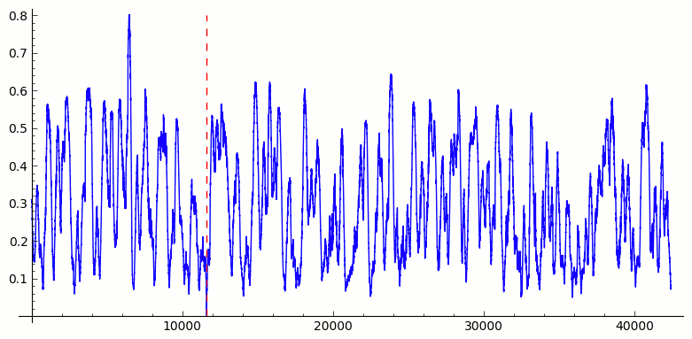
Again, we zoom in to see the detail, putting a horizontal line at the level representing how well the last 18 months matches the pre-1929 period.
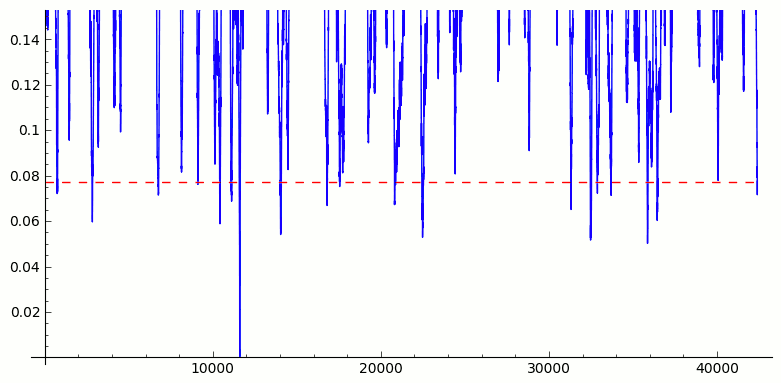
There are 17 periods that match better–sometimes much better–than recent history. Here I have made a chart for all 17 where I have graphed each a little beyond the length of the time period to see if our test predicts anything about the future.
| 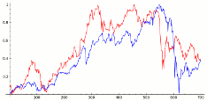 | 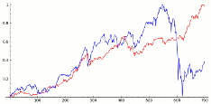 | 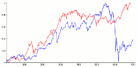 |
| 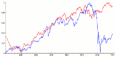 | 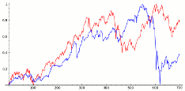 | 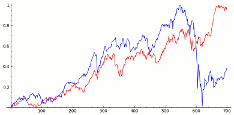 |
| 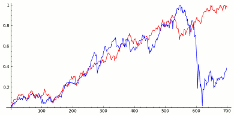 | 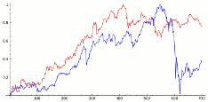 | 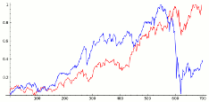 |
| 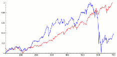 | 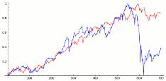 | 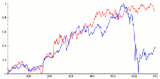 |
| 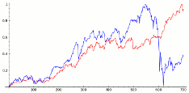 | 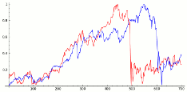 | 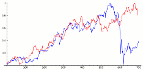 |
| 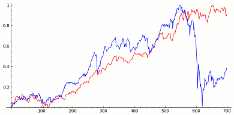 | 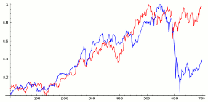 |
As you can see, the evidence in no way supports the notion that DJIA activity that closely tracks the pre-1929 DJIA activity over this time period is predictive of market decline.
But why are market commentators talking about it?
Because market analysts make a living reading tea leaves. Any “analyst” commenting on this chart needs to answer these questions:
- How can you dismiss the most fundamental, common sense rules of plotting data?
- How could you possibly conclude that tracking pre-1929 behavior is indicative of a decline when you have never asked the most basic question of whether such behavior has been predictive historically?
- Why is this alleged correlation any different from other apparent correlations to things like sunspot activity or bubblegum sales that every freshman statistics student knows how to debunk?
In short, how could people whose profession hinges on their ability to analyze data be so ignorant of the most elementary facts of data analysis?
[1] MarketWatch has several articles on the subject. See:
Mark Hulbert, “Scary 1929 market chart gains traction,” MarketWatch, February 11, 2014.
Mark Hulbert, “The chart that’s scaring Wall Street,” MarketWatch, December 6, 2013.
Anthony MIrhaydari, “Ghost of 1929 crash reappears,” MarketWatch, December 6, 2013.
[2] You can download the historical DJIA data yourself here: http://research.stlouisfed.org/fred2/series/DJIA/downloaddata?cid=32255.